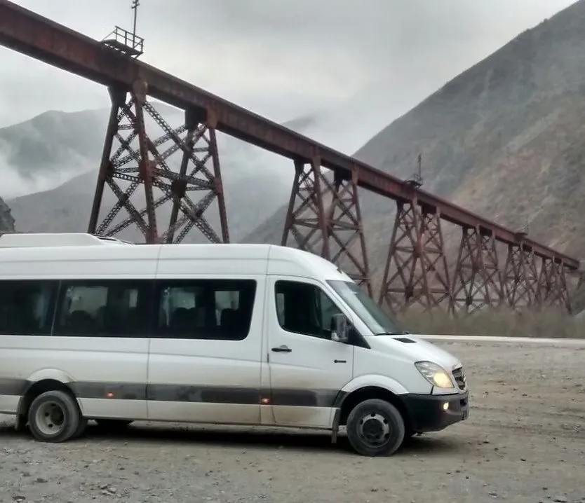

Puna salteña · Ruta 51
Traslado de Salta a San Antonio de los Cobres y la Puna
Subimos de Salta a San Antonio de los Cobres por la Ruta 51 y la Quebrada del Toro, y seguimos hasta el viaducto La Polvorilla. Es un camino asfaltado, pero sube casi 3.000 metros: lo hacemos despacio, con paradas, en combi o camioneta 4x4 con chofer. Conocemos la zona por más de una década de trabajo en la Puna.
La ruta
Por la Ruta 51 y la Quebrada del Toro
Son unos 164 km desde la ciudad de Salta, por la Ruta Nacional 51, asfaltada en todo el trayecto. Sin paradas, el manejo lleva unas tres horas. El camino pasa por el aeropuerto, Campo Quijano y la Quebrada del Toro, sigue por Santa Rosa de Tastil y cruza el Abra Blanca, a unos 4.080 metros, antes de bajar a San Antonio de los Cobres, a unos 3.775 metros.
En total el camino sube casi 2.900 metros. Por eso lo hacemos con paradas: el cuerpo se acomoda mejor si la subida es gradual.
| Punto | Distancia desde Salta y altura |
|---|---|
| Campo Quijano | Unos 29 km. Entrada a la Quebrada del Toro. |
| Santa Rosa de Tastil | Unos 102 km. |
| Abra Blanca | El punto más alto de la Ruta 51, a unos 4.080 m. |
| San Antonio de los Cobres | Unos 164 km, a unos 3.775 m. Alrededor de 3 h de manejo sin paradas. |
| Viaducto La Polvorilla | Unos 16 a 18 km más por la Ruta 40, camino angosto, a más de 4.200 m. |
Distancias y tiempos aproximados según Ruta0; alturas según fuentes de turismo de la provincia y del operador del tren (consultado el 10/10/2026).
La Polvorilla
El viaducto, en combi
El viaducto La Polvorilla está a unos 16 a 18 km de San Antonio de los Cobres, por la Ruta 40. Mide 224 metros de largo y 63 de alto, a más de 4.200 metros sobre el nivel del mar. Se llega en combi o en camioneta y se ve desde abajo y desde los miradores.
El 9 de octubre de 2026 Vialidad Nacional informaba la Ruta 40 entre La Poma y San Antonio de los Cobres habilitada, con máquinas trabajando en toda la zona. Revisamos el estado del camino antes de cada salida.
La altura
Cómo hacemos la subida
- Subimos despacio y con paradas
- Si alguien no se siente bien, paramos, y si hace falta, volvemos
- Teléfono satelital a bordo en los servicios de altura
- Combis de 19+1 plazas o camionetas 4x4, según el grupo y el camino
- Más de una década de trabajo en la Puna
- Habilitación CNRT N.º 60284 vigente y agencia de turismo habilitada



Tren a las Nubes
Si el viaje incluye el tren
El Tren a las Nubes llega al viaducto La Polvorilla y sale todo el año. Lausof es una empresa de transporte independiente: no opera el tren ni vende sus boletos. Los horarios, las tarifas y los boletos se consultan en el sitio oficial del Tren a las Nubes. El operador avisa que es una excursión de alta montaña y que puede cancelarse por el clima.
Si su itinerario combina el tren con un tramo por ruta, coordinamos el traslado según el horario que le confirme el operador.
Preguntas frecuentes
Lo que se pregunta antes de reservar
¿El camino a San Antonio de los Cobres es asfaltado?
Sí. La Ruta 51 está asfaltada desde Salta hasta San Antonio de los Cobres. El tramo hasta el viaducto La Polvorilla, por la Ruta 40, es un camino más angosto.
¿Cuánto se tarda?
Unas tres horas de manejo sin paradas, para unos 164 km. Como subimos con paradas, la ida lleva más. Es una estimación.
¿Se puede ir y volver en el día?
Sí. Es una salida de día completo desde Salta, con el viaducto incluido si el grupo quiere. También puede ser el primer tramo de un viaje más largo por la Puna.
¿Qué pasa con la altura?
San Antonio de los Cobres está a unos 3.775 metros y el camino pasa los 4.000. Mucha gente lo siente el primer día. Subimos despacio, paramos, y si alguien no está bien, volvemos.
¿Llevan al Tren a las Nubes?
No operamos ni vendemos el tren. Si su itinerario lo incluye, coordinamos el traslado por ruta según el horario que le confirme el operador del tren.
¿Siguen hacia Chile u otros puntos de la Puna?
San Antonio de los Cobres está en el camino del paso internacional hacia San Pedro de Atacama, en Chile, y hacemos viajes internacionales. Para trabajos en la zona minera, vea logística minera.
También en la región
Otros traslados que hacemos
- Salta – Cachi por la Cuesta del Obispo y la Ruta 40
- Salta – Cafayate por la Quebrada de las Conchas
- Transporte y logística minera en la Puna
- Todos los circuitos de Salta y Jujuy
Lausof SRL es una empresa familiar de transporte de Salta: pasajeros desde 2010, habilitación CNRT N.º 60284 y agencia de turismo habilitada. Conozca la empresa.
Actualizado el 10 de octubre de 2026. Distancias, tiempos y estado de rutas consultados ese día.
¿Subimos a la Puna?
Envíenos la fecha, cuántos viajan, si es solo ida, en el día o parte de un viaje más largo, y dónde los buscamos. Le respondemos con la cotización en el día.
Consultar por WhatsApp